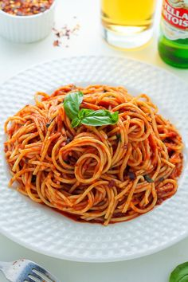
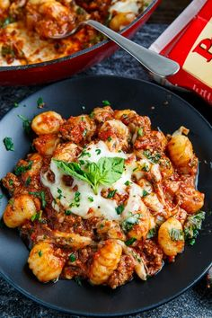
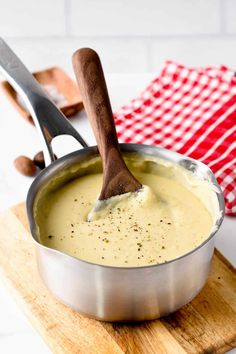
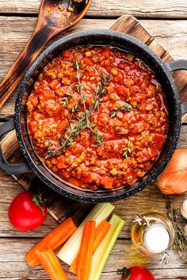

As massas tagliattelle, parpadelle e fettuccine são mais achatadas e grossas,
podendo ser servidas com muitos tipos de molhos. Entre eles estão os ragus,
como ragu de frango, cordeiro, frutos do mar, cogumelos ou à bolonhesa, por exemplo.
Podem também ser guarnecidas com carbonara e Alfredo.
Veja o vídeo a seguir:

Espaguete e linguine
Essas massas, por serem de fios longos e al dente, combinam com molhos líquidos
ou um pouco encorpados. Molho à bolonhesa, pesto, bechamel, de alho, ervas frescas,
vegetais e frutos do mar harmonizam bem com esses tipos de macarrão. Espaguete e linguine,
por vezes, são também usados no preparo do yakisoba, combinando perfeitamente com molho shoyu.
Veja o vídeo a seguir:

Gnocchi
Essa é uma massa de tamanho pequeno ou médio, suave e com textura macia.
Por esse motivo, casa bem com molhos de sabor mais intenso, como ragus, bechamel
e molho de tomate. O bechamel é uma ótima escolha, especialmente quando misturamos
sabores fortes, como queijo gorgonzola e cogumelos.
Veja o vídeo a seguir:
Molhos
Bechamel
Originário da França, leva farinha branca, margarina
e leite. É a base para todos os molhos brancos.

Bolonhesa
Favorito entre os molhos, é bastante conhecido. Basicamente, é o molho ao
sugo acrescido de carne moída.

Carbonara
Cremoso, o carbonara leva gema de ovo, bacon, creme de leite e queijo parmesão.